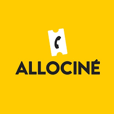

<mat-toolbar color="primary">
    <div id="menu">
        <button mat-icon-button (click)="onToggleSidenav()">
            <mat-icon>menu</mat-icon>
        </button>
    </div>
    <div class="container-fluid" id="logo">
        <a class="navbar-brand" href="/home">
            
        </a>
    </div>
    <div class="container-fluid" id="search">
        <form class="d-flex">
          <input class="form-control me-2" type="search" placeholder="Search" aria-label="Search">
          <button class="btn btn-outline-success" type="submit">Search</button>
        </form>
      </div>
  </mat-toolbar>